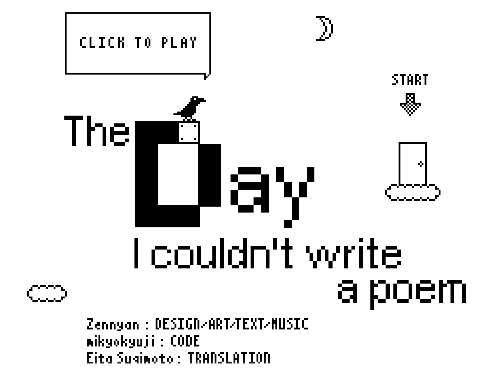
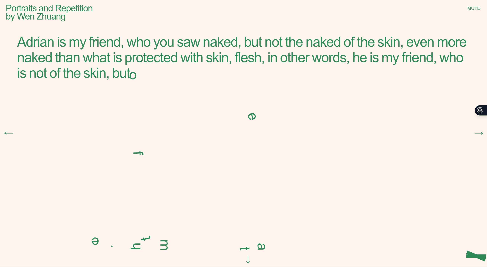

The Day I couldnt write a poem.
'The day I couldnt write a poem' is a website where the creator, Zennyan, tells a story of how he struggled to write a poem with 'lovely words' and 'lovely imagery' through the form of a game where the user walk on texts. Throughout the game, the user interacts with the story through a range of different obstacles that align with the story's meaning (the author's experience of not being able to write poetry). For instance, as the reader walks over the words 'pop up in my mind', the word 'pop' will literally pop and shoot the user upwards.
To interact with website, the user only uses the left and right arrow keys to move as well as the up key to jump.

Screenshot of the opening screen of the website 'the day i couldnt write a poem'Reading Machine.
Wen Zhuang's 'Portraits and Repetition' on the website Reading Machines is an interesting interactive website where the user watches letters of a paragraph fall slowly, with the speed increasing as more letters fall. The paragraph seems to be describing 'Adrian, who you see naked', possibly thus drawing a portrait of him? (since lots of art models are not clothed). As the letters keep falling whilst increasing in speed, the sound design of this website also increases, evoking feelings of panic and surprise in the user.
Once the letter has fallen from the paragraph, the user also has the option to click and control the letter however they like. By pressing the left and right arrow keys, the user also can change between the pages. Each page consists of the same interactions however the paragraph about 'Adrian' is just slightly different. He is described the same however some small details such as '…you saw naked' might change to 'I saw naked'… thus hinting at the 'repetition' in the works name.

Screenshot of one of the sites listed in reading machines